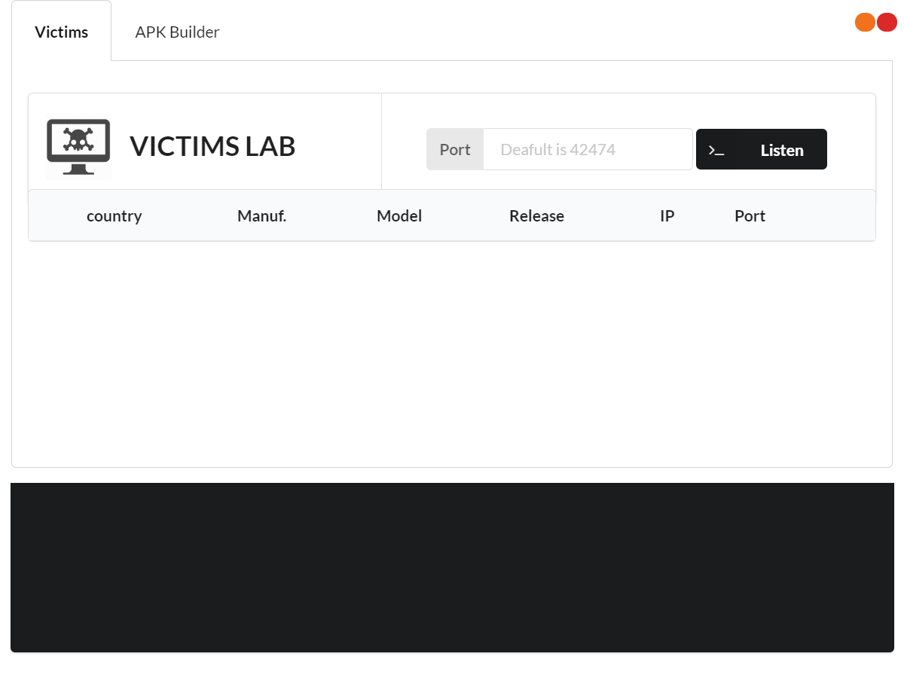
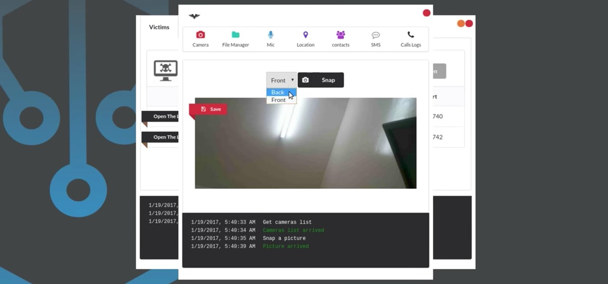

PROJECT-X_OFFICIAL_HACKING_FORUM_No.2
Main_PageAh-Myth(Remote Adminstration Toolkit)
This is a trust worthy R.A.T. as it at least provides the basic needs of a pentester which will be discussed below. The toolkit or any other payload generator requires certain important things which plays most vital role for the payload, that is the ip and port. In the ip section you may input your domain name or tunnel address but for the demonstration we basicaly use local ip. The payload follows the 'tcp' protocol, one of the Internet Protocols services. The prototcol allows to access files and data packets via the network you are in.
As shown in the above image, the tool provides the basic details of the victim like: camera, filemanager, voice_recording, live_location, contacts, sms, call logs.
To set up this software you will be needing a linux distribution virtual machine or operating system. If the requirements are already satisfied for this software then you can pull the respioratory from link provided below.
Ah-Myth_Documentation